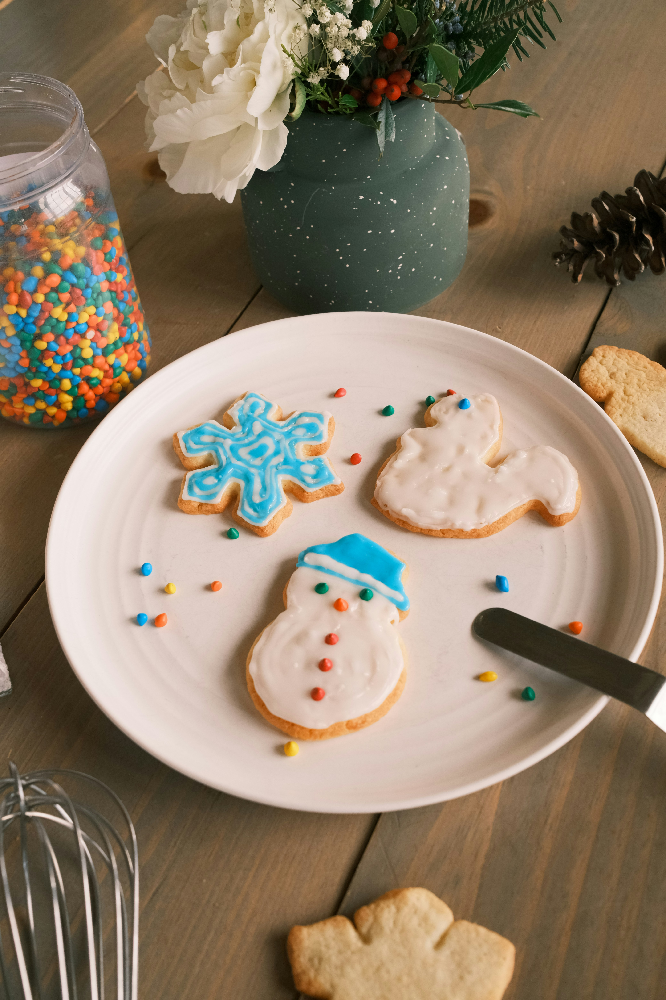

Sugar Cookies

Ingredients
- 4 cups all-purpose flour
- 3/4 teaspoon salt
- 3/4 teaspoon baking powder
- 1 cup softened unsalted butter
- 1 cup granulated sugar
- 2 eggs
- 2 teaspoons vanilla extract
For the Royal Icing
- 3 egg whites
- 1 pound confectioner's sugar
- 1 teaspoon vanilla extract
Steps
- In a medium bowl, sift together the flour, salt, and baking powder.
- In a large mixing bowl or the bowl of a stand mixer fitted with the paddle attachment, beat the butter and sugar together on medium speed until light and fluffy, about 2 minutes.
- Add the eggs, one at a time, while mixing. Scrape down the sides of the bowl. Beat in the vanilla.
- With the mixer running, gradually add in the flour mixture and mix until everything is well incorporated. Divide the dough in half, shape into two disks, and tightly wrap in plastic wrap. Refrigerate for 2 hours or up to 2 days. (if chilling longer than 2 hours, let the dough sit at room temperature for 15 to 30 minutes or until slightly softened.)
- Once the dough is chilled and you're ready to bake, preheat the oven to 375F.
- Roll the dough on a lightly floured surface to ¼-inch-thickness. Cut out shapes using 2½-inch cookie cutters. Re-roll as needed for more cookies.
- Place the cut-outs on non-stick or parchment-lined baking sheets 1 inch apart.
- Bake one sheet at a time for 10 to 12 minutes or until the bottom edges start to turn brown. As they bake you can get a head start on the royal icing.
- In the bowl of a stand mixer or large mixing bowl, beat egg whites on medium-low speed until frothy, about 1 minute.
- With the mixer on low speed, slowly add in confectioner's sugar and vanilla.
- Once fully incorporated, increase speed to medium-high and beat until stiff peaks shiny peaks form.
- Divide icing among small bowls, and dye with gel food coloring if desired. (Keep any icing that isn't being immediately used covered with plastic wrap as it dries out very quickly.) Transfer to piping bags and decorate cookies.
- Now take the cookies out of the oven and let cool for a few minutes on the pan then transfer to a wire rack and cool completely.
- Decorate and enjoy!
Notes
- Cool cookies before decorating. Whether you are drizzling with chocolate, frosting with sweet buttercream, dusting with powdered sugar, or using royal icing for intricate designs, allow the cookies to cool to room temperature before decorating. Any icing decorations will melt and run off the cookies if added before they are cooled.
- Eggs are easier to separate when cold. Egg whites whip up easier when closer to room temperature. I recommend separating them in advance if you have the time.
- You can whip egg whites by hand, but it'll require a lot of elbow grease to get it done.
- Do not rush the recipe and dump all the sugar into the egg whites at once. You lose volume if you add the sugar too quickly.
- Whipping the egg whites at a low speed allows the protein in the whites to break down better. This helps the whipped egg whites become more elastic and become more voluminous.
- Make sure the bowl you whip your whites in is super clean. Any residue water or fat will prevent the egg whites from becoming fluffy.
- While I prefer using gel food coloring, you can use what you have on hand. Remember that gel food coloring is more concentrated, so you can add less, whereas liquid food coloring may thin out the frosting if you add too much to it.
- If your icing has started to harden, add a drop or two of water to bring it back to your desired consistency. However, avoid making the icing too thin as it'll lead to air bubbles.
- When using royal icing to decorate cookies, pipe the icing first, then flood it. Outlining means piping a thin outline of the cookie with thicker icing and flooding means filling the middle with thinner icing. Piping an outline first keeps the icing from sliding off the cookies.
- Add a few drops of water to the icing and stir with a spatula for a flooding consistency. Continue adding water until you achieve the desired consistency.
Back to Home